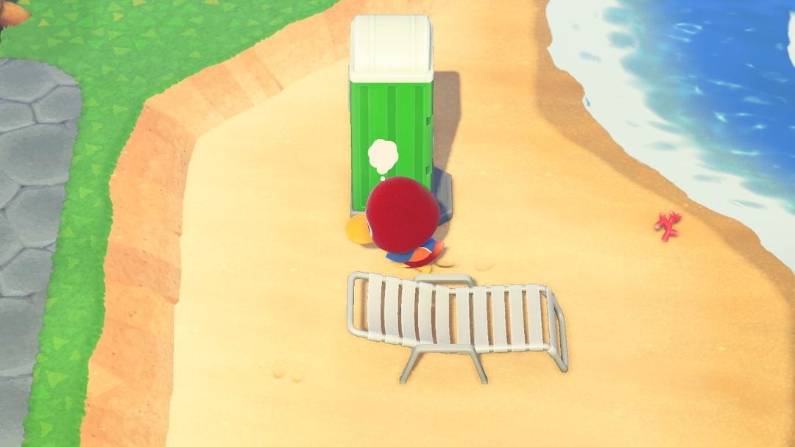
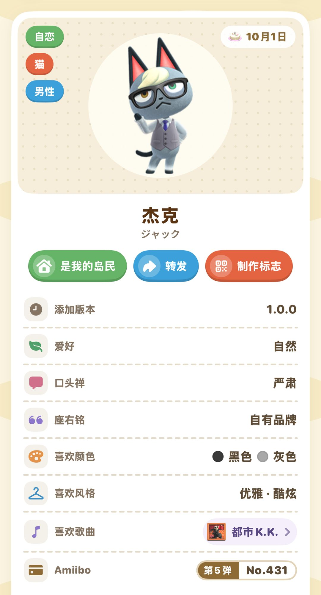
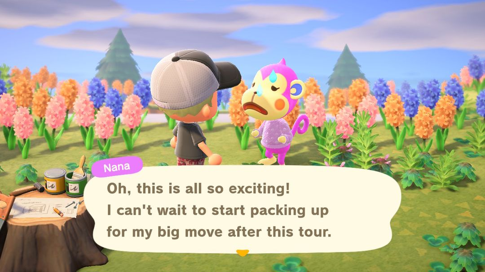
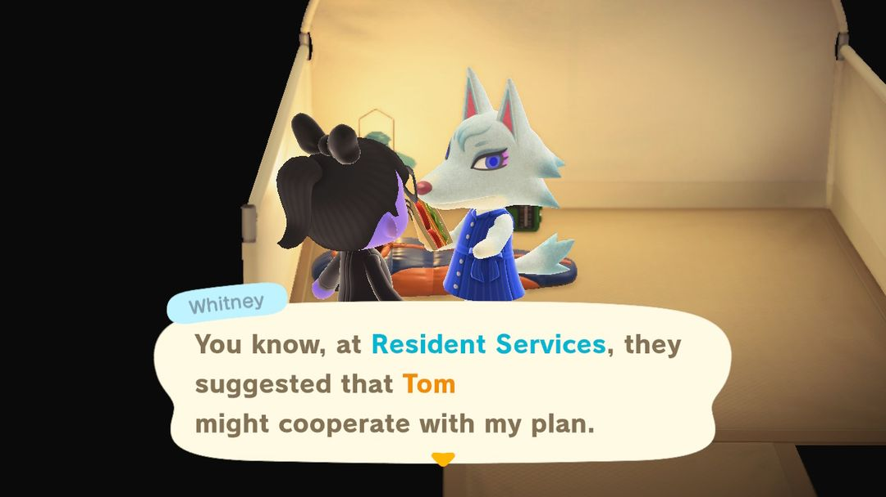

岛民搬入搬出
留住喜欢的、送走不想要的、请来想要的
岛上住的是谁，大半由你说了算。岛民搬走只有两条路：一是他自己来问，你点了头；二是你邀请新岛民时，把位置让出来。你不答应，谁也不会偷偷收拾行李走人。
所以要做的事其实就三件：喜欢的岛民冒出想走的念头时把他劝住，不想要的那位来问时痛快答应，空出来的地赶紧去请自己想要的人。下面按这个顺序说，最后再讲 amiibo 卡这个能点名换人的办法怎么用。
01什么时候会有人想搬走
岛上最多住 10 位岛民，住满 6 位以后，才会有人主动提出搬走。人少的时候不用操心这件事。
住满 6 位以后，还有几条时间上的限制：
· 有人刚搬走，之后 15 天内不会有人再提。
· 有人提了、被你劝住，之后 5 天内不会有人再提。
· 过了这段时间，每天都没人提的话，下一天有人提的机会就会涨一点；岛上住的岛民越多，也越容易有人提。
另外有几位暂时不会被选中：最后一位搬来的、上一次提过要走的、7 天内要过生日的，还有正在搬房子位置的。
具体轮到谁，带着随机性。一般认为和你关系最淡的那位更容易被挑中，所以喜欢的岛民平时多找他聊天、多送点礼物，能稍微降低他被选中的机会，不过不能打包票。
02看到思考泡泡怎么办
想搬走的岛民头上会冒出一个思考的泡泡，在岛上若有所思地走来走去。凑过去跟他说话，他会问你，自己是不是该搬走了。

头顶冒出白色思考泡泡的岛民，看到就过去聊聊（图：Nookipedia）
想留他，就挑劝他留下的那个回答，他会打消念头，接着住下去。
想送他走，就选同意。第二天去他家，会看到他在打包，满屋子堆着纸箱；再过一天他就搬走了，房子原来那块地变成空地。打包那天他还在岛上，想再跟他说几句话，就趁这一天。
注意躲着不理，他不会因此搬走，但泡泡可能转到另一位岛民头上，下回说不定就落在你最舍不得的那位身上。所以每天上线看到泡泡就去聊，该留的留，该送的送。
03想点名送走一位：用 amiibo 卡
等泡泡正好落到某个人头上，全凭运气。想指定让谁走，用 amiibo 卡最直接，顺便还能把想要的岛民请进来。步骤是这样的：
1. 在服务处的狸端机上扫一张岛民 amiibo 卡，卡上的岛民会来露营地。
2. 在三个不同的日子各扫一次，每次帮他做一件他想要的家具。
3. 到第三次就能邀请他搬来。如果岛上已经住满 10 位，这时可以自己选让谁搬走，被选中的那位当天打包，第二天搬走。
前后要跑三天，但每一步都在你手里，不用看运气。露营地来的岛民满员时是他来定顶替谁，amiibo 卡反过来由你来定，这是两者最大的差别。

在动森圈圈里点开岛民，能看到他的 amiibo 卡是第几弹、几号
小提示舍不得、又不得不送走的岛民，可以托付给朋友。等他打包那天（家里堆满纸箱的时候），请岛上有空地的朋友来串门，找他多聊几次，朋友就能把他接到自己岛上去。
04去哪里找新岛民
离岛（神秘岛）
花 2000 里数换一张里数旅行券，坐飞机去一座随机的无人岛，偶尔会碰到一位岛民在岛上闲逛。要请他回来有两个前提：你岛上得有一块还没人定下的空地，而且一天只能从离岛请一位回来。

在离岛上碰到岛民，邀请成功就会搬来你的岛（英文版画面）（图：Nookipedia）
离岛上遇到谁，是先随机抽种族、再从这个种族里抽人，所以同种族的岛民越多，想碰上其中某一位就越难。想心里有个数、知道大概要备多少张券，可以看动森圈圈岛民详情页里的「神秘岛遇到概率」。
露营地
露营地建好以后，时不时会有岛民来露营。按他的要求做（多半是陪他玩个小游戏），完成了就能邀请他搬来。要是岛上已经满员，他会先说出打算顶替谁，听了不满意可以不请。

岛上满员时，露营的岛民会先说出想顶替谁（英文版画面）（图：Nookipedia）
amiibo 卡
做法见上一节。想要某一位指定的岛民，这是最稳的办法；三丽鸥合作的几位岛民，也只能这样请来。
朋友岛上正在打包的岛民
跟上一节的小提示反过来：朋友岛上有人在打包，你岛上正好有空地，就飞过去找他多聊几次，把他接回来。
05空地别放太久
有人搬走以后，那块地会空出来。一直没去请人的话，游戏会自己安排一位随机岛民，空地上的牌子变成「已售出」，就请不了别人了。随机来的岛民不一定合你心意，到时候想换掉，又得等他自己冒泡泡，或者再用 amiibo 卡腾位置，绕一大圈。
想自己挑邻居，地空出来的当天就动身：坐飞机去离岛碰碰运气，或者每天去露营地看看有没有人。手上有想要的 amiibo 卡的话更省心，连空地都不用等，满员时直接邀请，顺手选好让谁走。
063.0 之后有什么不一样
搬家的规则在 3.0 没有变，上面这些照样适用。和岛民有关的变化有两点。
一是岛民变多了：新增 2 位全新岛民，另有 2 位老系列的岛民回归，岛民总数到了 417 位。
二是航平开了度假旅馆（游戏里叫「旅馆」），每天会来一些短住的旅客，里面也有平时能当岛民的动物。不过没有办法请旅客直接搬到岛上，想要这位岛民，还是得走上面几条路。
动森圈圈 · 小程序和 iOS App 都搜「动森圈圈」